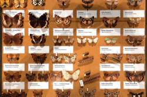

CELTA Syllabus
Topic 3: Language skills

It's not hard to figure out that most learners need to be able to
read, write, understand and speak English.
Different learners, however, have differing priorities.
If you are learning a language primarily to fit into the society in
which it is spoken then all four skills will be important: you need
to understand what you read and hear as well as respond to it either
orally or in writing.
However, if you have other reasons for learning the language, the
mix may be different.
 |
 |
Task 1:
Can you decide what might be the priorities for these 3
learners? Click here when you have some thoughts. |
- John wants to learn English in order to study at university in New York.
- Mary needs English to work in a hotel reception in Sydney.
- Pat needs English to correspond by email with her company's clients.
- John will certainly need to read books and journals and understand lectures primarily because this is the way input is given at most universities. He will also, of course, need to write essays and interact in seminars and with his fellow students and teachers so all four skills are important to him.
- Mary's priorities will be speaking and understanding. She may have to read emails from clients, too, and respond briefly to them but her priorities are to speak and to understand what she hears.
- Pat rarely, if ever, needs to talk to her clients. Her priorities are to understand what she reads and respond clearly and grammatically in writing.
This area of the CELTA syllabus ...
... contains the following areas (as one might expect):

and we'll consider all these areas in this guide, albeit briefly.
|  |
Classifying the skills |
Here are the four skills classified the conventional way:

It's not a simple as that, of course, because we rarely speak
without listening (although some of us do) and we often respond to
what we read in writing. Most of the time, then, skills are
combined and operate together.
There are, however, times when we only use one skill at a time:
reading a book, writing a website, listening to the radio or a
station announcement,
speaking to an answering machine or giving a presentation.
 |
Analysing the skills |
When it comes to analysing the skills, each one is tackled differently but there are some commonalities and some differences.
 |
Receptive skillsReceptive does not mean passive. |
A listener or reader may not seem to be doing much but that doesn't mean that a lot is not going on. In fact, both listening and reading are active skills and listeners and readers use a number of strategies to understand.
There are, however, some clear differences between listening and reading.
|
|
|
Task 2: Can you fill in the missing bits in this chart? Do that on a piece of paper and then click on the chart when you have an answer. |

If you are unclear about what is meant by some terms, don't worry now. The individual guides to the skills will make things clear.
Two key terms:
- gist listening or reading
- refers to getting the main message. That may be enough in a lot of cases.
- intensive listening or reading
- refers to getting the details clear. That may be essential if you are listening to a train announcement or reading instructions for operating a chain saw.
 |
Receptive strategies |
When we listen or read, two processes happen simultaneously.
- The first of these is what is called bottom-up
processing
We try to decode what we see or hear using our knowledge of the grammar, lexis and phonology of English.
When reading we decode the letters or chunks of letters and words, match them to the vocabulary store we have (our lexicon) and then figure out what the grammar is telling us about the meaning.
When listening, we do much the same thing but here we are trying to divide the stream of noise into recognisable sections (words and phrases) and then match these with items in our lexicon. At the same time, we are listening to how things are said so we can get an idea of the speaker's attitude.
Using redundancy
is a key concept which applies to top-down processing.
We can't usually understand everything we hear or read and we don't need to. Our eyes can skip sections of text and we can miss large amounts of what a speaker says and still follow the message.
For example, it isn't difficult to understand these:


and in a sentence like
John is going to London early tomorrow morning
there are bits of grammatical and lexical redundancy, too.
We don't need the 'is' because we have said 'John' and that's enough to tell us that it's the third person. We don't need the '-ing' ending on the verb (especially if we already know that we are talking about a current arrangement concerning the future) and we don't need the word 'morning' either, because we have already said 'early' and so on.
Redundancy in language is not a problem for learners; it's a positive aid because it means we can miss or skip large sections of what we hear and read without losing our way. - The second thing we bring to reading or listening is our
knowledge of the world and the cultural setting.
Using this kind of knowledge is called top-down processing.
If, for example, if I already know the subject of a conversation, it makes understanding what is said much easier. Equally, if I know how a newspaper is set out in terms of pictures, headlines and so on as well as the subject of an article, it is much easier for me to predict what I am going to encounter and that makes understanding easier.
It's important to realise that top-down and bottom-up processing
happen at the same time. We can practise the skills separately
(and we often need to) but we apply them together.
There is a guide on this site concerned with
the essentials of skills teaching which you may like to follow.
If you want to know much more about top-down and bottom-up
processing and how we use them to infer meaning in the language we
hear or see, go to
the guide
to inferencing.
 |
Barriers to understanding |
Both when listening and reading there are potential barriers to understanding. These are sometimes called blocking events.
|
|
|
Task 3:
Can you think what things might make it difficult to
understand? Click here when you have a couple of ideas. |
- We may not have enough vocabulary to understand what we hear or read.
- We may feel stressed and under pressure and lose confidence.
- We may not be able to chop up what we hear into recognisable chunks or realise, e.g., that impoliteness is formed from the base adjective polite, made negative by im- and made into a noun by -ness.
- We may not be familiar with the topic area and get lost in detail.
and so on.
The teacher's job is to reduce the barriers or give our learners ways to overcome them.
 |
Productive skills |
Here, too, there are commonalities and differences.
Both skills require us to be comprehensible.
In writing, that means picking the right words and grammar to
communicate our meaning.
We need to do that when we are speaking, too, but as we saw above,
accurate grammar is not always required and we can also use simpler
words (and even replacements for words we don't know like stuff or
thing or even whatsitsname and thingummyjig) to get our message across. We do,
however, need to form the sounds of the language accurately enough
and be aware of intonation and that's something the writer can
ignore.
Speaking and writing differ in a number of ways.
|
|
|
Task 2: Can you fill in the missing bits in this chart? Do that on a piece of paper and then click on the chart when you have an answer. |

Again, if you don't understand all these terms, don't worry. The individual guides will make things clear.
 |
Moving on |
OK, now you are ready to move on to consider each skill at a time.
Go to
the skills section of the initial
plus training index and follow the links to the skill(s) that
interest(s) you.
Take each skill at a time, read the What is ... guide first and then go on to the teaching guides.
The links below will lead you to guides to the other areas of the syllabus and to an overview unpacking what the syllabus means and how it is assessed.
| Topic 1 | Topic 2 | Topic 3 | Topic 4 | Topic 5 | Unpacking | The CELTA Index |
| Learners and teachers, and the teaching and learning context | Language analysis and awareness | Language skills | Planning and resources for different teaching contexts | Developing teaching skills and professionalism | Unpacking the syllabus and assessment | The index of all the CELTA guides |